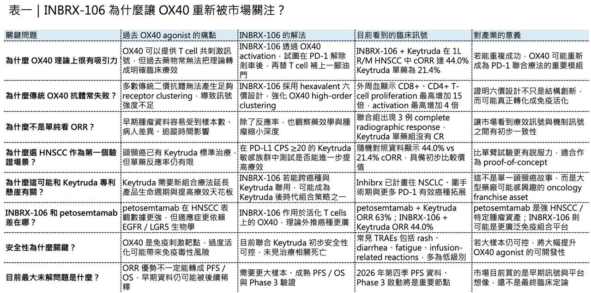
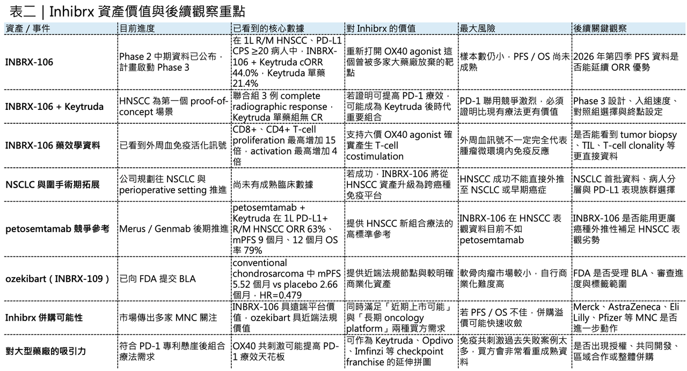

Keytruda 的下一個最佳搭檔？INBRX-106 讓 OX40 重新回到腫瘤免疫牌桌
🧬 腫瘤免疫治療已經進入一個很微妙的階段。
分享這篇分析
把這篇文章轉給關注生技醫藥、公司研究或資本市場的朋友。
PD-1／PD-L1 inhibitor 改寫了過去十年的癌症治療格局，Merck 的 Keytruda（pembrolizumab） 更是其中最具代表性的「藥王」。2025 年，Keytruda／Keytruda QLEX 全球銷售額達 317 億美元，幾乎是 Merck 製藥收入的核心支柱。
也正因如此，Keytruda 面對專利懸崖之後，Merck 最需要的不是再找到一個普通腫瘤藥，而是找到能延長 Keytruda 生命週期、提高療效天花板、並且可以跨癌種擴張的下一代組合療法。
這也是為什麼 Inhibrx Biosciences 的 INBRX-106 最新資料，會讓市場突然重新看向 OX40 agonist 這個曾經被許多大型藥廠嘗試、卻又反覆失敗的免疫共刺激靶點。
根據 Inhibrx 公布的 HexAgon 研究 Phase 2 中期分析，在一線復發／轉移性頭頸部鱗狀細胞癌，也就是 1L recurrent or metastatic head and neck squamous cell carcinoma（1L R/M HNSCC），且 PD-L1 高表現 CPS ≥20 的病人中，INBRX-106 + Keytruda（pembrolizumab） 的 confirmed objective response rate（cORR）達到 44.0%，而 Keytruda 單藥組為 21.4%。
這不是非頭對頭的歷史比較，而是在同一項隨機研究中的早期比較訊號。
更值得注意的是，聯合治療組出現 3 例影像學完全緩解，也就是 complete radiographic response，而 Keytruda 單藥組沒有看到 complete response。聯合組中，多數有反應的病人標靶病灶縮小超過 50%；外周血分析也顯示，聯合治療組 CD8+ 與 CD4+ T-cell proliferation 最高增加 15 倍，T-cell activation 最高增加 4 倍。這些藥效學資料，讓 INBRX-106 不只是「反應率看起來比較好」，而是初步看到了符合 OX40 共刺激機制的免疫活化訊號。
這就是這個故事真正有意思的地方。
🧬INBRX-106 不是單純多一個抗癌抗體，而是在回答一個過去腫瘤免疫領域反覆失敗的問題：
PD-1 解除剎車之後，能不能再幫 T cell 補上一腳真正有效、可控、足夠強的油門？
01｜OX40 不是新靶點，但一直是難做的靶點
OX40，也就是 CD134，是一個表現在活化 T cells 上的 costimulatory receptor。它的理論邏輯非常漂亮：如果 PD-1 inhibitor 是解除腫瘤微環境對 T cell 的抑制訊號，那 OX40 agonist 就是透過共刺激訊號，促進 T cell 增殖、活化、存活與免疫記憶形成。
用比較直白的方式說，PD-1 是「鬆剎車」，OX40 是「踩油門」，這兩者在理論上非常互補。
但腫瘤免疫開發最殘酷的地方就是：理論漂亮，不代表臨床會成功，過去不少 OX40 agonist 曾被大型藥廠寄予厚望，最後卻沒有真正打開局面。原因大致有幾個。
🔬 第一，單藥活性通常很弱。
腫瘤免疫不是把 T cell 打開就一定有效。腫瘤微環境裡有 Treg、myeloid suppressor cells、抗原呈現不足、T cell exhaustion、免疫排斥等多層阻力。OX40 agonist 如果刺激不足，很難在單藥狀態下產生明顯抗腫瘤效果。
🔬 第二，和 PD-1 inhibitor 聯用後，過去很多產品也沒有做出足夠清楚的臨床增益。
對大型藥廠來說，OX40 的價值不是理論上能活化 T cell，而是能不能在 Keytruda、Opdivo、Tecentriq 這些 checkpoint inhibitor 已經建立標準治療的場景裡，再把反應率、PFS 或 OS 往上推。
🔬 第三，傳統二價抗體可能無法提供足夠受體聚集。
OX40 的生物學特性需要高階受體聚集，才能有效啟動下游訊號。傳統 bivalent antibody 只有兩個結合位點，可能不足以模擬天然 OX40L 造成的高階 clustering。這也是過去 OX40 agonist 效果不穩定的重要原因之一。
🔬 第四，安全性與免疫方向也很難拿捏。
OX40 不只表現在效應 T cells，也可能在 Treg 上表達。如果設計不夠精準，理論上可能同時擴增抑制性 Treg，反而不利抗腫瘤免疫。換句話說，OX40 不是單純「刺激越強越好」，而是要刺激對的細胞、在對的微環境、用對的強度。
這就是 INBRX-106 被重新關注的原因，它不是又一個傳統 OX40 agonist，而是嘗試用六價設計解決過去 OX40 藥物「聚集不夠、訊號不足、臨床活性不清楚」的核心問題。
02｜ INBRX-106 的六價設計，為什麼和過去 OX40 不一樣？
INBRX-106 是一個 hexavalent OX40 agonist，也就是六價 OX40 agonist。Inhibrx 使用其 single-domain antibody（sdAb）平台設計 INBRX-106，目標是達到 OX40 受體的 high-order clustering，進而產生更強、更穩定的 T-cell activation 與 T-cell survival 訊號。Inhibrx 也指出，目前已有超過 175 名病人接受過 INBRX-106 治療。
🧩 這裡的「六價」不是包裝詞，而是藥物設計的核心。
天然 OX40 ligand（OX40L）本身具有三聚體結構，並且在細胞膜上可以形成更高階的受體聚集訊號。傳統二價抗體只能抓住兩個受體，模擬天然配體的能力有限；INBRX-106 透過六個 OX40 結合單元，試圖讓受體聚集更接近天然生物學訊號，進而放大下游免疫共刺激效果。
這也是為什麼 INBRX-106 的臨床資料中，藥效學訊號特別重要，如果只有 cORR 從 21.4% 提高到 44.0%，市場還可以懷疑這是不是小樣本、病人差異或追蹤時間造成的波動。但如果同時看到 CD8+ 與 CD4+ T-cell proliferation、activation 的明顯提升，就比較能支持「這個分子真的在做它該做的事」。
這對 OX40 這種過去失敗很多次的靶點特別重要。市場不是只想看療效，市場更想知道：這次的分子設計，到底有沒有解決前一代 OX40 agonist 沒有解決的問題？目前 INBRX-106 給出的答案，是初步有希望，但還沒有到可以下最終結論的時候。
03｜為什麼選 1L R/M HNSCC？因為這是一個很會驗證 PD-1 增益的場景
Inhibrx 選擇 1L R/M HNSCC 作為 INBRX-106 與 Keytruda 聯合療法的 proof-of-concept，不是隨便選的，這個適應症有幾個特點。
🎯 第一，Keytruda 單藥已經是標準治療之一。
FDA 在 2019 年核准 Keytruda 用於一線 metastatic 或 unresectable recurrent HNSCC：可與 platinum + 5-FU 聯用於所有病人，也可作為單藥用於 PD-L1 CPS ≥1 的病人。這個核准基於 KEYNOTE-048 研究。
🎯 第二，PD-L1 CPS ≥20 是 Keytruda 單藥獲益相對較明確的族群。
如果一個新組合療法想證明自己能在 PD-1 基礎上再提高療效，選擇 PD-L1 高表現族群比較合理。因為這群病人本來就對 PD-1 有反應空間，若加上 OX40 共刺激後能進一步提高反應率，就比較能說明組合的增益，而不是單純在 PD-1 無效族群裡亂槍打鳥。
🎯 第三，HNSCC 仍有大量未滿足需求。
Keytruda 已經改變 HNSCC 治療，但反應率仍有限，很多病人無法從 PD-1 單藥中獲益。這也是為什麼新型免疫組合在 HNSCC 裡一直有開發價值。
Inhibrx 這項 HexAgon 研究也明確聚焦 treatment-naïve、PD-L1 positive（CPS ≥20）、metastatic 或 unresectable recurrent HNSCC 病人。Phase 2 部分共納入 68 名病人，其中 33 名隨機至 INBRX-106 + Keytruda 組，35 名至 Keytruda 單藥組；本次公布的是截至 2026 年 5 月 7 日資料截止時，53 名可評估 confirmed response 的病人，所以這項資料要怎麼看？不能說它已經證明 INBRX-106 一定會成功，但它確實比一般單臂早期腫瘤資料更有參考價值，因為它有隨機對照組，而且對照組 Keytruda 單藥的 cORR 21.4% 也大致符合市場對這個族群的合理預期，這讓 44.0% vs 21.4% 的差距，初步具備討論價值。
04｜ 它真的會是 Keytruda 最佳搭檔嗎？現在還不能下結論，但訊號值得重視
INBRX-106 最吸引大型藥廠的原因，不只是 HNSCC 這一個適應症。
更大的想像是：如果 OX40 共刺激能穩定提高 PD-1 inhibitor 的療效，它理論上可以往其他 PD-1 敏感癌種延伸。這才是 Merck、Eli Lilly、AstraZeneca、Pfizer、Johnson & Johnson、Ono Pharmaceutical 等大型藥廠可能會關注這類資產的真正原因。Reuters 先前報導指出，Inhibrx 已吸引多家藥廠對 INBRX-106 與 ozekibart（INBRX-109） 的興趣；若臨床試驗成功，INBRX-106 估值可能超過 80 億美元，兩項資產合計潛在價值可能超過 90 億美元。
對 Merck 來說，這個邏輯尤其明顯。
Keytruda 是全球銷售最高的腫瘤免疫藥之一，但專利到期與 biosimilar 壓力終究會來。Merck 已經透過 Keytruda QLEX 這類皮下注射劑型、早期癌症適應症擴張、以及各種聯合療法來延長 Keytruda 的生命週期。若 INBRX-106 能在多癌種中提高 Keytruda 療效，它就可能不只是 HNSCC 新藥，而是 Keytruda post-patent cliff strategy 的重要拼圖，但投資人也要冷靜。目前 INBRX-106 的資料仍是 Phase 2 中期分析，樣本數有限，PFS 與 OS 尚未成熟。Inhibrx 預計 Phase 2 的 PFS 資料會在 2026 年第四季成熟，並計畫於 2026 年第三季啟動 HexAgon 研究 Phase 3 部分。
也就是說，現在可以說「看到很有價值的早期訊號」。
但還不能說「已經證明是 Keytruda 最佳搭檔」，真正會決定估值的，是接下來幾個問題：
💡cORR 優勢能不能轉換成 PFS？
💡PFS 能不能進一步支持 OS？
💡complete response 是否真的帶來更長效益？
💡安全性在更大樣本中能否維持可控？
💡HNSCC 之外，能不能在 NSCLC 或圍手術期場景重複成功？
如果這些問題逐步得到正面答案，INBRX-106 的價值才會從「很漂亮的免疫共刺激故事」變成「大型藥廠非買不可的平台型資產」。

05｜ 和 Petosemtamab 相比，INBRX-106 不是最強表觀數據，但可能有更大外推空間
如果只看 1L R/M HNSCC 的早期表觀數據，目前 INBRX-106 + Keytruda 並不是這個領域最強的組合。Merus 的 petosemtamab，也就是 EGFR × LGR5 bispecific antibody，與 Keytruda 聯用在 1L PD-L1+ R/M HNSCC 中已經公布非常亮眼的 Phase 2 資料：43 名可評估病人中 confirmed ORR 達 63%，median PFS 為 9 個月，12 個月 OS 率為 79%，且觀察到 6 例 complete response。
這組資料非常強，也直接推動 petosemtamab 成為 HNSCC 領域最受關注的新資產之一。Genmab 也在 2025 年宣布以約 80 億美元現金收購 Merus，把 petosemtamab 納入後期管線。
因此，如果只問「目前 HNSCC 一線組合表觀數據誰更漂亮」，petosemtamab + Keytruda 仍然更突出。
⚔️ 但 INBRX-106 的不同之處在於，它的外推邏輯可能更寬。
Petosemtamab 的價值建立在 EGFR 與 LGR5 相關腫瘤生物學上，特別適合頭頸癌、消化道腫瘤等 EGFR／LGR5 具備合理表達與生物學支撐的癌種。它很強，但更像是腫瘤標的導向的雙抗資產，INBRX-106 則是 T-cell costimulation 資產。
它的作用對象不是腫瘤細胞表面的單一抗原，而是活化 T cells 上的 OX40。這意味著，如果它真的能穩定提高 checkpoint inhibitor 的療效，理論上可以在更多 PD-1 有活性的癌種中探索，包括 NSCLC、黑色素瘤、腎細胞癌、尿路上皮癌，甚至部分早期或圍手術期場景。Inhibrx 也已經明確表示，計畫在更廣泛適應症中評估 INBRX-106，包括近期啟動 non-small cell lung cancer（NSCLC）圍手術期研究，並預計 2027 年開始進入一線 metastatic NSCLC 場景。公司也提到，未來可能探索與 vaccines、T-cell engagers、CAR-Ts 等可受益於 T-cell costimulation 的療法聯用。
這就是 INBRX-106 的真正戰略價值，它不一定在 HNSCC 表觀資料上壓過所有競品，但如果 OX40 共刺激平台成立，它可能成為 PD-1 時代下一個可複製的免疫組合模組。這也是大型藥廠最喜歡的資產類型：不是只打一個癌種，而是有機會嵌入整個 腫瘤特許經營。
06｜INBRX-109 打底：Inhibrx 不只有 OX40，還有一個接近申請階段的 DR5 資產
INBRX-106 是市場想像空間最大的資產，但 Inhibrx 另一個關鍵管線 ozekibart（INBRX-109），其實更接近法規節點。Ozekibart 是一個 tetravalent DR5 agonist antibody，也就是四價 death receptor 5 agonist。它的設計目標，是利用 DR5 activation 誘導腫瘤偏向性的細胞死亡。
這個資產最重要的第一個適應症，是 conventional chondrosarcoma，也就是傳統型軟骨肉瘤。
軟骨肉瘤是一個高度未滿足需求市場。對於無法切除或轉移性病人，目前沒有獲准的全身性標準療法，化療效果也相當有限。Inhibrx 的 ChonDRAgon study 是一項 randomized、blinded、placebo-controlled、registration-enabling Phase 2 study，共在全球 67 個中心納入 206 名病人。
結果顯示，ozekibart 將 median PFS 從 placebo 組的 2.66 個月提高到 5.52 個月，疾病進展或死亡風險降低 52%，HR 為 0.479，P<0.0001。Disease control rate 也從 placebo 組的 27.5% 提高到 ozekibart 組的 54%。更重要的是，這是第一個在 chondrosarcoma 隨機試驗中證明 PFS 顯著獲益的 investigational therapy。Inhibrx 也已在 2026 年 4 月向 FDA 提交 ozekibart 用於 conventional chondrosarcoma 的 Biologics License Application（BLA）。
這讓 Inhibrx 的故事不只是「一個 OX40 早期資料很漂亮的公司」。它同時有一個已提交 BLA 的罕見腫瘤資產，和一個可能改寫 PD-1 聯合治療格局的免疫共刺激資產。這種組合對潛在買方很有吸引力。因為 ozekibart 提供較近端的法規與商業化節點，INBRX-106 則提供更大的腫瘤免疫平台想像空間。
07｜為什麼 Inhibrx 可能成為併購標的？因為它剛好踩中大型藥廠的三個焦慮
Inhibrx 之所以被市場視為潛在併購標的，不只是因為股價上漲，也不是因為單一新聞刺激，它剛好踩中大型藥廠現在的三個焦慮。
💰 第一，是 Keytruda 之後的腫瘤免疫接棒焦慮。
大型藥廠過去十年靠 PD-1／PD-L1 建立巨大收入，但下一階段必須回答：PD-1 之後，腫瘤免疫還能怎麼往前走？單純再做一個 PD-1 沒意義，真正有價值的是能提高 PD-1 天花板的組合療法。
💰 第二，是 solid tumor 新機制焦慮。
ADC 很熱，bispecific antibody 很熱，radioligand therapy 很熱，但真正能跨癌種複製的腫瘤免疫新模組並不多。OX40 失敗多年後，如果 INBRX-106 真的用六價設計把共刺激做出來，會讓整個 immuno-oncology pipeline 重新多一個可探索方向。
💰 第三，是後期資產稀缺焦慮。
大型藥廠現在不缺錢，但缺的是風險已經被部分去化、又還沒有被完全定價的資產。Ozekibart 已提交 BLA，INBRX-106 也有隨機 Phase 2 訊號，這種組合非常適合大型藥廠進行「現在買，未來放大」的 BD 或 M&A 操作。
從這個角度看，Inhibrx 不是單純一家公司，而是一個很典型的 2026 年 oncology M&A 標的樣本：
💰 有近端法規節點。
💰 有遠端平台想像。
💰 有大藥廠專利懸崖痛點。
💰 有免疫組合療法延伸空間。
💰 也有被大型藥廠整合後放大的商業化可能。
08｜風險不能忽略：INBRX-106 還在早期，OX40 的死亡谷也還沒完全走完
不過，這個故事不能只看上行空間，INBRX-106 目前最重要的限制，是資料還不成熟。
⚠️ 第一，樣本數仍小。
本次 confirmed response 可評估病人只有 53 名，其中 INBRX-106 + Keytruda 組 25 名，Keytruda 單藥組 28 名。雖然差距很明顯，但小樣本早期資料仍可能被後續更大樣本稀釋。
⚠️ 第二，PFS 與 OS 還沒出來。
在 HNSCC 這種高未滿足需求癌種中，ORR 很重要，但最終仍要看 PFS、OS、duration of response 以及安全性。尤其是免疫共刺激類藥物，如果能促進 memory T-cell formation，理論上可能帶來更持久獲益，但這必須由時間證明。
⚠️ 第三，安全性需要更大樣本驗證。
目前 INBRX-106 + Keytruda 的初步安全性可控，常見 treatment-related adverse events 包括 rash、diarrhea、fatigue、infusion-related reactions，且多為低級別，兩組都沒有治療相關死亡。但 OX40 agonist 是免疫刺激藥物，在更大人群、更長時間、更多癌種與更多聯合療法中，是否會出現新的免疫毒性，仍需觀察。
⚠️ 第四，癌種外推需要一個一個驗證。
HNSCC 成功，不等於 NSCLC 必然成功；metastatic setting 成功，也不等於 perioperative setting 必然成功。每一個癌種的免疫微環境、腫瘤抗原、T-cell priming 狀態與治療基礎都不同。
所以對投資人來說，INBRX-106 現在最合理的定位是：
⚠️ 它已經重新證明 OX40 這個靶點值得看。
⚠️ 它已經證明六價設計可能比傳統 OX40 agonist 更有臨床轉譯潛力。
⚠️ 但它還沒有完全證明自己是 Keytruda 的最佳搭檔。
下一個關鍵節點，是 2026 年第四季 PFS 資料與 Phase 3 啟動後的更大規模驗證。

結語｜INBRX-106 的價值，不只是頭頸癌反應率翻倍，而是 OX40 重新活過來了
INBRX-106 這次資料最重要的地方，不只是 cORR 從 21.4% 提高到 44.0%。更重要的是，它讓一個多年來被大型藥廠反覆嘗試、反覆失望的 OX40 靶點，重新回到腫瘤免疫主戰場。如果 INBRX-106 後續能把 ORR 優勢轉成 PFS、OS 與更持久的反應，它就不只是 HNSCC 的新組合療法，而可能成為 Keytruda 後時代最重要的免疫共刺激資產之一。
Ozekibart 則提供 Inhibrx 另一個近端法規支撐：一個已提交 BLA、在 chondrosarcoma 隨機試驗中證明 PFS 獲益的 DR5 agonist。
🚩 一個是接近法規節點的罕見腫瘤資產。
🚩 一個是可能放大 PD-1 療效天花板的免疫平台資產。
OX40 過去失敗太多次，市場不會只因為一次漂亮中期資料就完全買單。真正決定 INBRX-106 價值的，是接下來 PFS、OS、Phase 3、NSCLC、圍手術期，以及更多免疫組合場景能否連續兌現。
腫瘤免疫從來不缺理論，真正稀缺的是能把理論做成臨床獲益的分子。
INBRX-106 現在最迷人的地方，是它終於讓市場看到：OX40 這個曾經跌入死亡谷的靶點，也許還沒有結束。
參考資料：
[0]: 各公司官網＆公開資料
[1]:
Merck & Co., Inc., Rahway, N.J., USA Announces Fourth-Quarter and Full-Year 2025 Financial Results; Highlights Progress Advancing Broad, Diverse Pipeline - MSD
Reports Strength in Oncology and Animal Health, Plus Increasing Contributions From WINREVAIR and CAPVAXIVE Fourth-Quarter Worldwide Sales Were $16.4 Billion (5% Growth; 4% Growth ex-FX) Fourth-Quarter GAAP EPS Was $1.19; Non-GAAP EPS Was $2.04; GAAP and N
www.msd.com
[2]:
Inhibrx Reports Interim Phase 2 Data for INBRX-106 in First-Line HNSCC; Initial Results Demonstrate Potential Costimulatory Benefit Over PD-1 Monotherapy - May 11, 2026
Interim analyses show INBRX-106 + pembrolizumab achieved a 44.0% confirmed Objective Response Rate (cORR): In the preliminary confirmed response-evaluable population, the INBRX-106 + pembrolizumab...
inhibrxbiosciences.investorroom.com
"Inhibrx Reports Interim Phase 2 Data for INBRX-106 in First-Line HNSCC; Initial Results Demonstrate Potential Costimulatory Benefit Over PD-1 Monotherapy - May 11, 2026"
[3]:
FDA Approves Pembrolizumab for the First-Line Treatment of HNSCC - The ASCO Post
https://ascopost.com/issues/june-25-2019/fda-approves-pembrolizumab-for-the-first-line-treatment-of-hnscc/
ascopost.com
[4]:
reuters.com
https://www.reuters.com/world/merck-rivals-eye-deal-inhibrx-experimental-cancer-drug-tied-keytruda-sources-say-2026-04-22/
www.reuters.com
[5]:
[6]:
www.sec.gov
https://www.sec.gov/Archives/edgar/data/1434265/000094787125000868/ss5386579_exa5a.htm
www.sec.gov
引用本文
若在簡報、報告或社群討論引用，建議附上 Drugnews 原文連結。
Drugnews 編輯部，〈藥王的最佳搭檔？療效翻倍！〉，Drugnews｜藥時事，2026/05/30，https://drugnews.com.tw/articles/2026-05-30-drug-combination-efficacy-doubling.html
社群原文
讀完這篇，下一步看
這三篇會優先依主題、標籤與產業脈絡推薦，幫你把同一個問題讀得更完整。

減肥藥還是太強了，禮來 猛健樂 賺爛！
2026 年第一季，Eli Lilly 交出了一份讓整個製藥業都很難忽視的成績單：單季總營收 197.99 億美元，年增 56%；調整後 EPS 達 8.55 美元，大幅優於市場預期。真正撐起這份財報的，仍然是那個已經把全球代謝藥市場打穿的名字：tirzepatide。

一篇文章講通現在的“禮來”併購邏輯
💡 四個月，五筆交易，若把交易上限全部加總，Eli Lilly 在 2026 年前四個月已經丟出超過 187 億美元的併購火力：1 月的 Ventyx Biosciences、2 月的 Orna Therapeutics、3 月的 Centessa Pharmaceuticals、4 月的 Cro…

DAC（降解劑－抗體偶聯藥物）會是下一代標靶藥物的新引爆點嗎？
【強強聯手！當 ADC 遇上 PROTAC】生醫圈有兩個絕對頂流。📌 一個是 ADC（Antibody-Drug Conjugate，抗體藥物複合體）。📌 另一個是以 PROTAC（Proteolys